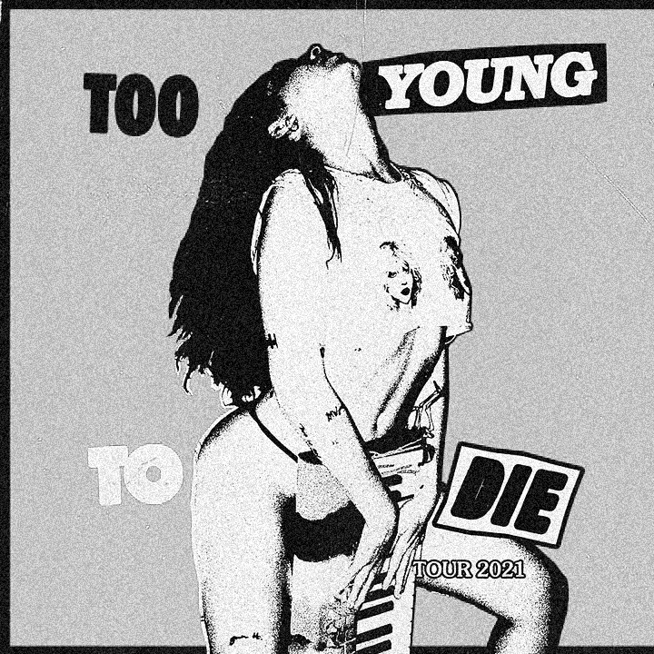

“It's a psychedelic dream about the Kurt to my Courtney, about what it would be like to find an iconic love where every moment together is pure, kaleidoscopic bliss.” -Sizzy Rocket on her song ‘& It Feels Like Love’
While Rocket’s music is a mix of pop strains, her inspirations are pure punk: she makes cut-and-paste zines, the title of Grrrl is an obvious nod to the riot-grrrl movement, and lead single “Sid Vicious” is a piano-heavy paean to falling for military-jacket-wearing bad boys.
“The spirit of punk isn’t all sex, drugs, and rock and roll. Sometimes, it’s about leaving those things behind and abandoning the status quo to better yourself.”